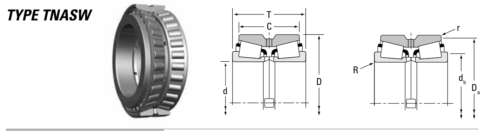

NP446605/NP930308 is a Timken tapered roller bearing, bore 303.89 mm, O.D. 419.1 mm, height 161.93 mm. Dimensions, drawing, interchanges and price.

Scanned from the manufacturer catalogue page listing this part number. All part numbers printed on that table share the same drawing.
Blue = inner / outer ring, yellow = rolling element. Drawn to scale from this part's own dimensions for selection reference only - not a manufacturing or assembly drawing.
| Symbol | Dimension | mm | inch |
|---|---|---|---|
| d | Bore diameter | 303.886 | 11.964 |
| D | Outside diameter | 419.1 | 16.5 |
| T | Overall assembly width | 161.925 | 6.375 |
| C | Cup / outer-ring width | 129.54 | 5.1 |
| r | Chamfer (min) | 1.5 | 0.0591 |
Tapered roller bearings are cone / cup assemblies; cone and cup weights are listed separately and the total is their sum. Weights are given in kg. Load ratings are shown in both the original catalogue units and the converted value (1 N = 0.2248 lbf). Data is provided for selection reference only - confirm against the latest official catalogue before ordering.
| Bore d (mm) | 303.886 |
|---|---|
| Bore d (in) | 11.9640 |
| Outside dia. D (mm) | 419.100 |
| Outside dia. D (in) | 16.5000 |
| Overall width T (mm) | 161.925 |
| Overall width T (in) | 6.3750 |
| Cup width C (mm) | 129.540 |
| Cup width C (in) | 5.1000 |
| Basic dynamic load rating Cr (lbs) | 464000 |
|---|---|
| Basic dynamic load rating Cr (N) | 2060000 |
| Dynamic rating C1 (N, ISO) | 2060000 |
| Dynamic rating C1 (lbf, ISO) | 464000 |
| Radial rating C90 (N) | 307000 |
| Radial rating C90 (lbf) | 69100 |
| Thrust rating Ca90 (N) | 273000 |
| Thrust rating Ca90 (lbf) | 61400 |
| Factor e | 0.52 |
| Factor Y1 | 1.30 |
| Factor Y2 | 1.94 |
| Factor K | 1.13 |
| Weight (kg) | 64.32 |
|---|
| Shaft fillet R max (mm) | 6.4 |
|---|---|
| Housing fillet r max (mm) | 1.5 |
| Shaft shoulder db (mm) | 336.0 |
| Housing shoulder Da (mm) | 406.9 |
| C / P | Equivalent load P (N) | L10 (106 rev) | L10h at 500 rpm |
|---|---|---|---|
| 4 | 515,000 | 102 | 3,386 |
| 6 | 343,333 | 392 | 13,083 |
| 8 | 257,500 | 1,024 | 34,133 |
| 10 | 206,000 | 2,154 | 71,814 |
| 15 | 137,333 | 8,323 | 277,449 |
Basic rating life per ISO 281: L10 = (C/P)10/3 with C = 2,060,000 N. Hours = L10 x 106 / (60n). Life-modification factors for lubrication, contamination and temperature (aISO) are not included.
| Brand | Timken |
|---|---|
| Source catalogue | Timken Tapered Roller Bearing Catalog (2016) |
| Catalogue page | p.664 (dimensions) |
| Series type | TNASW |
ISO dynamic rating C1, Timken C90 / Ca90, static rating C0, geometry factors and assembly weight.
| Designation | Brand | Type | d | D | B/T | Dyn. rating | kg |
|---|---|---|---|---|---|---|---|
| HH258249D/HH258210 | Timken | Tapered Roller | 303.21 | 495.3 | 263.52 | 5000 kN | 213.93 |
| HH258249TD/HH258210 | Timken | Tapered Roller | 303.21 | 495.3 | 263.52 | 5000 kN | 224.54 |
| EE129121D/129172 | Timken | Tapered Roller | 304.65 | 438.05 | 134.94 | 1560 kN | 60.89 |
| EE329117D/329172 | Timken | Tapered Roller | 304.65 | 438.05 | 131.76 | 1920 kN | 64.3 |
| M757447D/M757410 | Timken | Tapered Roller | 304.65 | 438.05 | 128.59 | 1910 kN | 64.1 |
| NP868174/329172 | Timken | Tapered Roller | 304.65 | 438.05 | 131.76 | 1880 kN | 65.38 |
| EE109120/109161D | Timken | Tapered Roller | 304.8 | 412.75 | 158.75 | 1080 kN | 51.53 |
| EE109120/109163D | Timken | Tapered Roller | 304.8 | 412.75 | 123.83 | 1080 kN | 39.79 |
Send us the quantity you need and we will come back with price and lead time, normally within 24 hours. Equivalent parts from other brands can be quoted at the same time.